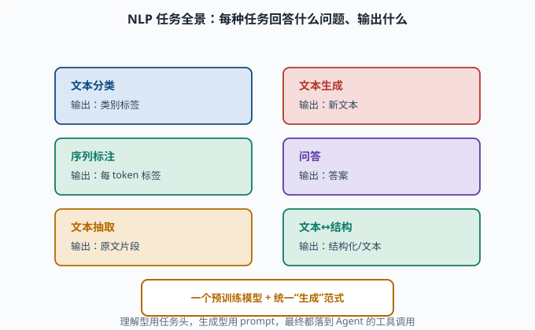
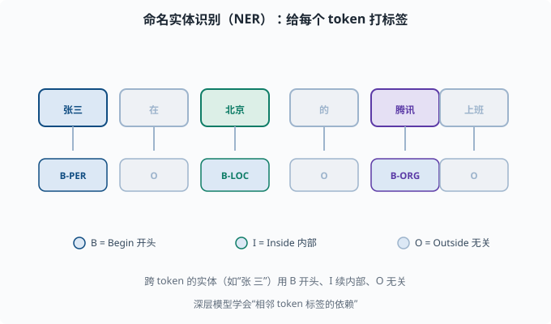

NLP 任务全景：分类、抽取、生成与问答的建模方式
目标：建立"NLP 常见任务长什么样、怎么用模型建模"的地图。读完这一页，你能为文本分类、序列标注、抽取、生成、问答各自讲出典型的输入/输出与建模套路。
为什么需要一个"任务全景"
预训练模型（05-08）是"泛懂语言"的底座，但真实世界要解决的是具体任务。这一页把 NLP 的主要任务归类，告诉你每类任务要模型回答什么问题、通常怎么建模。之后无论你读论文还是做产品，都能快速对号入座。

上图是一张六宫格速查地图，每个格子写一类任务和它"输出什么"：文本分类输出类别标签、序列标注输出每个 token 的标签、文本抽取输出原文片段、文本生成输出全新文本、问答输出答案、文本↔结构在结构和文本之间转换。底下琥珀色的底座提醒你：这些任务最终都可以挂在一个统一的预训练模型上，理解型用任务头、生成型用 prompt。
任务一：文本分类
输入：一段文本 输出：一个类别标签。
例子：
情感分析：影评 → 正面/负面
垃圾邮件检测：邮件 → 垃圾/正常
主题分类：新闻 → 体育/财经/科技
建模方式（BERT 风格）：在文本前加 [CLS]，用整个序列的双向编码得到句子的综合表示，接一个分类层输出类别概率（softmax）。也可以用 LLM prompt 化"一句话回答类别"。
任务二：序列标注 / NER
输入：一段文本 输出：每个 token 一个标签。
例子：命名实体识别（NER）——找出文本里的人名、地名、机构：
输入：张三 在 北京 的 腾讯 上班
标签：人名 ─ ─ 地名 ─ 机构 ─
建模：给每个 token 的表示接一个标签分类头（常用 BIO 标注：B = Begin 实体开头、I = Inside 实体内部、O = Outside 无关）。深层模型能学到"相邻 token 标签的依赖"。

上图把 NER 的 BIO 标注摊开：每个 token 上方是它本身，下方箭头指向它对应的标签。张三 标 B-PER（人名开头）、北京 标 B-LOC（地名单词）、腾讯 标 B-ORG（机构），其余无关词标 O。底部的图例解释这三个符号：B 表示实体开头、I 表示实体内部、O 表示与该实体无关。跨多个 token 的实体（比如"张 三"）就用 B 开头、I 续内部，配合后续组合把完整实体拼出来。
任务三：文本抽取
输入：一段文本 + 一个问题/要求 输出：文本里的一段/几段关键内容。
例子：
抽取式问答：给一段文章，问"主角去了哪" → 输出文章里那句话/那一段
关系抽取：从句子中抽出 (实体1, 关系, 实体2) 三元组
关键：答案是从原文里"截取"出来的，不是模型自由发挥。这种任务对"忠实性"要求高，适合理解型底座。
任务四：文本生成
输入：一段文本（或 prompt） 输出：全新生成的文本。
例子：机器翻译、摘要、写诗、写代码、对话回复。
建模：自回归解码（05-04 的 decoder、05-06 的生成式 Transformer），一个 token 一个 token 地"续写"，直到结束标记。现代 LLM 的绝大多数产品体验（包括 Agent 的输出）都属于生成。
任务五：问答（QA）
输入：问题（常带上下文/文档） 输出：答案。
三种子类型：
抽取式 QA：答案从文档里选一段（上面任务三）
开放域 QA：不给定文档，凭模型知识回答
多轮对话：结合上文的连续问答
现代 LLM 把"开放域 QA"和"多轮对话"统一成了"生成"：给 prompt 里塞入上下文，模型把答案当作续写生成出来。这也是 RAG（检索增强生成——先检索相关文档、再把文档塞进 prompt 让模型作答）的用武之地，07 展开。
任务六：文本↔结构
把文本转成结构化表示，或反之：
文本 → 结构化：情感分类标签、情绪标签、意图识别、抽取三元组
结构化 → 文本：表 → 自然语言描述
这在 agent 场景尤其常见：从用户请求里抽出"意图 + 槽位"，或把工具的返回值整理成自然语言回复。
一张任务速查表
| 任务 | 输入 | 输出 | 典型建模 |
|---|---|---|---|
| 文本分类 | 一段文本 | 类别标签 | [CLS] + 分类头 / 生成 |
| 序列标注 | 文本 | 每 token 标签 | BIO + token 分类头 |
| 抽取 | 文本+要求 | 原文片段 | 抽取头 / RAG 生成 |
| 生成 | prompt/文本 | 新文本 | 自回归解码 |
| 问答 | 问题(±文档) | 答案 | 抽取或生成 |
| 文本↔结构 | 文本/表格 | 结构化/文本 | 分类头 / 生成 |
这些任务和 Agent 的关系
deepseek-harness 里的 agent（08）本来就是一连串 NLP 任务的产品组合：
理解用户意图 → 意图分类/抽取（任务一、六）
决定调用哪个工具 → 工具选择的分类/生成
填写工具参数 → 参数抽取/结构化生成
生成最终回复 → 文本生成（任务四）
多轮对话 → 对话式问答（任务五）
所以"语言模型能做这些任务"是 Agent 的基础假设（08-01 什么是 Agent）。
思考题
- 文本分类在 BERT 风格下的典型建模是什么？
- NER 属于哪类任务？为什么常用 BIO 标签？
- 抽取式问答和生成式问答的核心区别是什么？
- 为什么现代 LLM 能把"开放域问答"统一成"生成"？
- 试举一个"文本→结构"在 Agent 场景里的例子。
参考答案
- 在文本开头放
[CLS]，让双向编码把整句信息汇聚到该位置的表示，再接一个分类层做 softmax 输出类别概率；或用 LLM 把"判断类别"写成生成式 prompt。 - 属于序列标注（token 级标注）。BIO（Begin/Inside/Outside）用 B 标实体开头、I 标内部、O 标无关，能把连续跨 token 的实体完整切开，也方便后续组合。
- 抽取式从原文截取一段作为答案，忠实、可溯源、不自由发挥；生成式由模型自行组织文字，更灵活但可能"编造"（幻觉），需要更强控制。
- 因为生成可以把"问题+可选上下文"写成 prompt，把"答案"当作续写输出，无需单独为问答设计专用结构，语法统一、模型通用。
- 例如 Agent 从用户"帮我查北京的天气并订明天去上海的机票"里抽取出意图（天气/订票）与槽位（地点北京、时间明天、目的地上海），再转成工具调用参数。
下一步
- 想把任务能力装进"会思考的工具调用者" → 06 LLM 原理 与 08 Agent 基础。
- 想研究生成质量怎么控制（采样、解码、幻觉）→ 07 LLM 工程。
- 想补文本表示/分词的底子 → 05-02 词表示 与 05-03 分词。